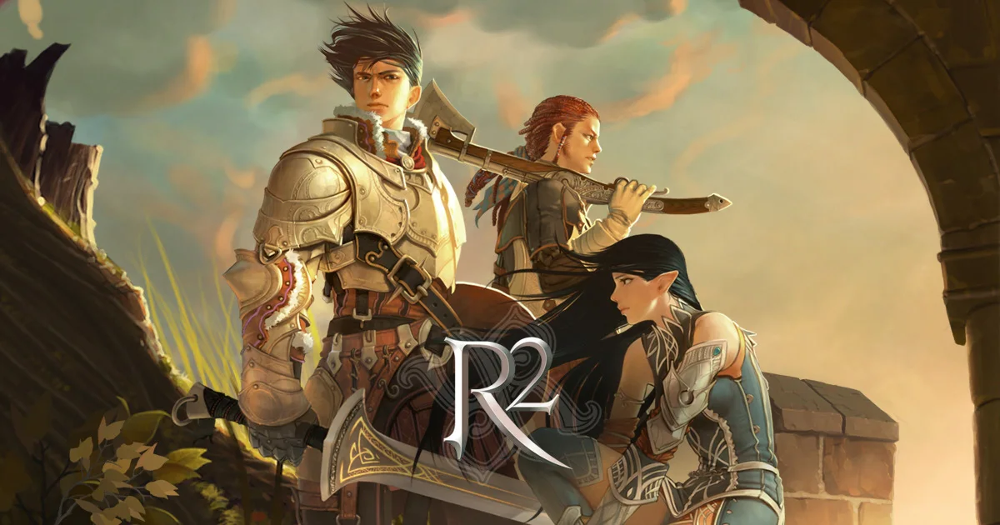

웹젠 · PC MMORPG · 서비스 20주년
R2 원격 임대
R2는 웹젠이 서비스하는 PC MMORPG로, 2026년 서비스 20주년을 맞았습니다. 'No Rules, Just Power!!'를 내세운 거침없는 투쟁이 특징이고 길드전·공성·랭킹 같은 경쟁 콘텐츠가 중심입니다. 지금은 일반 서버와 특화 서버, 성장 속도를 높인 오리지널 리부트 서버, 20주년 이벤트 서버 '메모리아'가 함께 운영됩니다.
공식 PC 사양이 높지 않은 편이고 접속 시간이 보상에 반영되는 이벤트도 있어, 24시간 켜진 원격PC에 클라이언트를 설치해 두면 휴대폰으로 상태만 확인하며 이어갈 수 있습니다.
공식 PC 사양 공개서비스 20주년리부트·메모리아 서버
R2를 원격PC로 돌릴 때 알아둘 점
- 공식 사양이 높지 않아요 — 최소 사양은 라이젠5 4650 또는 인텔 i3, RAM 4GB, 내장 그래픽(또는 RX550·GTX1030급)이고, 권장은 라이젠5 5600 또는 인텔 i5 이상, RAM 8GB 이상, RX580·GTX1660급 이상입니다. 원격임대 전 옵션이 RAM 기준을 넘고, 권장 그래픽 기준을 맞추려면 외장 그래픽 옵션이 맞습니다.
- 서버가 여러 종류예요 — 일반 서버와 특화 서버, 성장 지원을 강화한 '오리지널 리부트' 서버, 20주년 이벤트 서버 '메모리아'가 함께 운영됩니다. 서버마다 보상과 이벤트가 달라서 어느 서버에서 접속 시간을 쌓을지 먼저 정하면 편합니다.
- 20주년 업데이트 BEYOND 20 — 출석 시스템과 인벤토리 인터페이스가 개선됐고, 기념 퀘스트를 완료하면 20주년 특별 변신과 변신 스킨을 얻을 수 있습니다. 11월 12일까지 열리는 리스펙트 페스티벌에서는 몬스터 사냥과 누적 접속 시간에 따라 이벤트 티켓을 받습니다.
- 접속 시간이 보상에 반영돼요 — 리스펙트 페스티벌의 이벤트 티켓은 누적 접속 시간으로도 쌓이고, 오리지널 리부트 서버에는 이벤트 시간 누적 보상과 캐릭터 생성 후 28일간 보상을 주는 통합보급센터가 있습니다. 접속을 안정적으로 유지해 주는 원격PC가 도움이 됩니다.
- 신병 훈련소로 빠르게 시작 — 처음 시작하거나 복귀하는 이용자를 위해 빠른 레벨업 코스인 신병 훈련소와 서버·게임 가이드가 공식 사이트에 정리돼 있습니다. 어떤 서버로 시작할지 모르겠다면 가이드를 먼저 확인하고 상담해 주세요.
- 전화인증으로 계정 보호 — 일반 서버에서는 보안을 위해, 특화 서버에서는 필수로 전화인증 서비스에 가입하게 되어 있고 리부트 서버에서는 더 큰 혜택이 있습니다. 원격PC에서도 계정 로그인과 인증은 고객님이 직접 진행합니다.
R2 추천 임대 옵션
라이젠 5600GT
6코어 12쓰레드 · RAM 24GB · 내장 Vega 7
중사양 다중6코어 12쓰레드 · RAM 24GB · 내장 Vega 7
라이젠 2600
6코어 12쓰레드 · RAM 24GB · 외장 그래픽카드
단독 고사양6코어 12쓰레드 · RAM 24GB · 외장 그래픽카드
공식 최소 그래픽 기준에 내장 그래픽이 포함돼 있어 내장 그래픽 옵션으로도 최소 사양 범위는 맞습니다. 권장 CPU(라이젠5 5600급)에 가까운 5600GT를 기본으로, 권장 그래픽(RX580·GTX1660급 이상)까지 맞추려면 외장 그래픽 라이젠 2600을 추천합니다. 계정 수와 그래픽 설정을 알려주시면 옵션을 맞춰 드립니다.
R2 공식 PC 사양
| 항목 | 최소 | 권장 |
|---|---|---|
| 운영체제 | Windows 10 | Windows 10 이상 |
| CPU | AMD 라이젠5 4650 또는 Intel i3 | AMD 라이젠5 5600 또는 Intel i5 이상 |
| RAM | 4GB | 8GB 이상 |
| 그래픽카드 | 내장 그래픽 또는 Radeon RX550 / GeForce GTX1030 | Radeon RX580 / GeForce GTX1660 이상 |
| DirectX | 9.0c | 11 이상 |
| 설치 용량 | 10GB 이상 | 10GB 이상 |
R2 공식 홈페이지 게임 다운로드 페이지 기준 · DirectX 9.0 이하 버전이 설치돼 있으면 게임이 정상 실행되지 않을 수 있음
R2 원격 임대 자주 묻는 질문
R2는 어떤 게임인가요?
웹젠이 서비스하는 PC MMORPG로 2026년 서비스 20주년을 맞았습니다. 길드전과 공성, 랭킹 같은 경쟁 콘텐츠가 중심이며 일반 서버, 특화 서버, 오리지널 리부트 서버, 이벤트 서버 '메모리아'가 운영됩니다.
R2 서버는 어떻게 다른가요?
일반 서버와 특화 서버, 성장 지원이 강화된 오리지널 리부트 서버, 20주년을 맞아 열린 이벤트 서버 '메모리아'가 있습니다. 서버마다 이벤트와 보상이 달라, 어떤 서버를 할지 계획을 알려주시면 그에 맞는 옵션을 안내해 드립니다.
PC 사양은 어느 정도 필요한가요?
공식 최소 사양은 라이젠5 4650 또는 인텔 i3, RAM 4GB, 내장 그래픽 또는 RX550·GTX1030이고 권장은 라이젠5 5600 또는 인텔 i5 이상, RAM 8GB 이상, RX580·GTX1660 이상입니다. 원격임대 전 옵션이 RAM 기준을 넘으며, 권장 그래픽 기준까지 맞추려면 외장 그래픽 옵션(라이젠 2600)이 적합합니다.
R2는 자동 사냥이 되나요?
공식 홈페이지 안내에서 자동 사냥(오토) 기능은 확인되지 않았습니다. 기능 유무와 규정은 공식 공지를 기준으로 안내해 드리며, 외부 자동화 프로그램은 지원하지 않습니다.
여러 클라이언트를 한 PC에서 켤 수 있나요?
다중 클라이언트 허용 여부와 제한은 공식 안내에서 확인되지 않았습니다. 허용 범위를 확인한 뒤 그 안에서만 안내해 드리고, 계정 수를 알려주시면 맞는 옵션을 먼저 상담해 드립니다.
원격 접속을 끊어도 R2가 계속 켜져 있나요?
네. 원격 접속 창만 닫히고 원격PC와 실행 중인 게임은 계속 켜져 있습니다. 접속 시간이 보상에 반영되는 이벤트가 있을 때 접속을 안정적으로 유지할 수 있고, 휴대폰 원격 앱으로 상태만 확인하시면 됩니다.
20주년 이벤트는 언제까지인가요?
리스펙트 페스티벌은 11월 12일까지이고, 포인트 존 이벤트는 11월 19일 오전 8시 30분까지 적립한 포인트로 응모하는 방식입니다. 이벤트 일정은 바뀔 수 있으니 공식 홈페이지 공지를 함께 확인해 주세요.
R2 계정은 어떻게 로그인하나요?
원격PC에서 R2 공식 홈페이지로 로그인하고 클라이언트를 설치해 실행합니다. 웹젠·네이버·페이스북·구글 로그인이 지원되며, 계정 정보와 전화인증은 고객님이 직접 입력합니다.